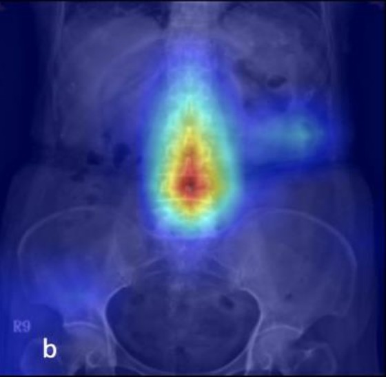

Revolutionizing Osteoporosis Treatment with AI-Powered Fracture Detection
Our deep learning technology detects vertebral fractures with high precision—empowering radiologists, clinicians, and researchers to make faster, more accurate decisions.
How It Works
Intelligent Detection, Seamless Integration.

Advanced Computer Vision Models
Using advanced computer vision models trained on thousands of annotated spinal images, our platform flags subtle and overt vertebral fractures—often missed in routine scans.
Seamless integration with existing radiology workflows makes it easy to adopt, enhancing diagnostic efficiency and accuracy from day one.
Why Choose Us
Delivering exceptional value for all healthcare stakeholders.
Clinical-Grade Accuracy
Validated in multi-center studies to deliver trustworthy diagnostic results.
Automated Workflows
Significantly reduce reading time and increase the efficiency of radiologists.
Secure & Compliant
HIPAA-compliant, cloud-based platform to ensure patient data security.
Decision Support
Generate structured reports for personalized osteoporosis treatment planning.
Proven in the Field
The impact of our technology in real-world settings.
"In a 12-month deployment, our tool identified 32% more fractures than traditional reporting—directly improving patient treatment outcomes."
— Head of Radiology, Partner Hospital
Trusted by Leading Medical Institutions
Built by Clinicians and AI Experts
We are a team of medical imaging specialists, AI engineers, and clinical advisors, combining deep clinical experience with cutting-edge technical expertise.
Our shared mission is to reduce the suffering and burden caused by osteoporosis-related fractures worldwide through earlier, smarter detection.
Join Us in Transforming Bone Health
Whether you are a healthcare provider, research partner, or investor, we invite you to join us in shaping the future of healthcare.